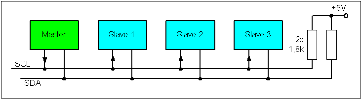

GISi Hardware Group
6/5/15
Arduino and Peripherals
What is a peripheral?
"A useful circuit that's built onto the chip itself" - IMF
Hardware, not software
- Can run simultaneously
- Can run even when the CPU is shut down
- Low power consumption
- Could be anything! (JPEG compression on imagers, processor cores on FPGA)
Common Types
- Serial Communications (UART/SPI/I2C)
- Analog <-> Digital Converters (ADC / DAC)
- Pulse Width Modulator (PWM)
- A bunch more that Arduino might not expose (Timers, Comparators, Watchdog, Interrupt on Change
Serial Communications
UART
Universal Asynchronous Reciever / Transmitter- Serial Port
- Used for: Debugging, industrial control
- RS-232, RS-422, RS-485 define voltage levels
- For RS-232, signal must be between 3 and 15V. So your 5V or 3.3V chip can plug right into a PC serial port.
SPI

- Multiple devices on a single bus
- Uses 4 wires, requires 1 chip select pin per device
- Used for: inter-chip communication on a board
I2C
- Addressable--multiple devices on a single bus
- 2 wires, no chip select
- Used for: inter-chip communication on a board
Analog/Digital Converters
- Analog signal normalized to digital range (0-5V)
- Sample resolution (usually 10 bits: 0-1023)
- Used for: Sensors, measurement, audio
Pulse Width Modulators
- Square wave generation
- Frequency and average voltage
- Simulates an analog signal with a digital pin
- Used for: Motor control, duty cycle (dimming an LED)
Other stuff
- Timers
- Watchdog
- Interrupt on Change
Beyond Arduino
Why?- Performance (Power consumption)
- Cost (Design for manufacture)
- Learning (Your abstraction layer is hiding important details from you!)